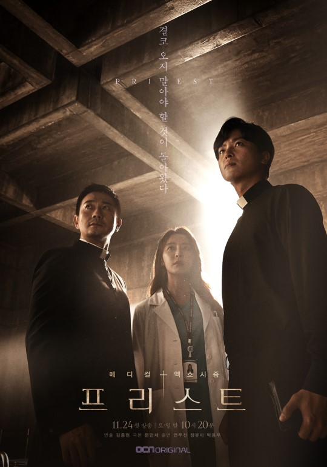

Priest
Priest blends medical drama with dark supernatural horror in a way that feels genuinely unsettling. It follows doctors and priests who secretly work together to save people possessed by violent spirits. The premise sounds like it could go loud and dramatic, but the show stays restrained and that restraint is what makes it effective.
The atmosphere is heavy throughout. Hospitals at night. Rituals performed in basements. Quiet fear that sits in the room even when nothing is actively happening. The horror here is not about jump scares. It is about dread. About watching something wrong unfold slowly and knowing you cannot stop it.
What makes Priest different from other supernatural K-dramas is how seriously it takes the spiritual side. The exorcisms feel rooted in tradition rather than spectacle. The priests are not action heroes. They are tired, scared, and aware that what they are fighting is bigger than them.